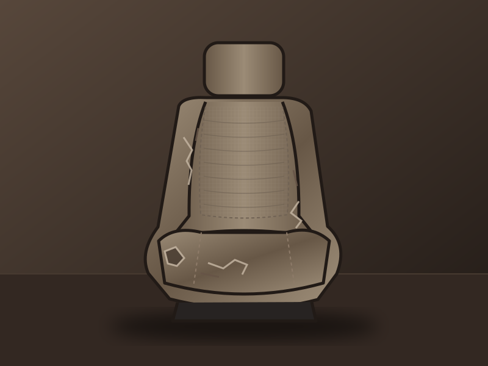
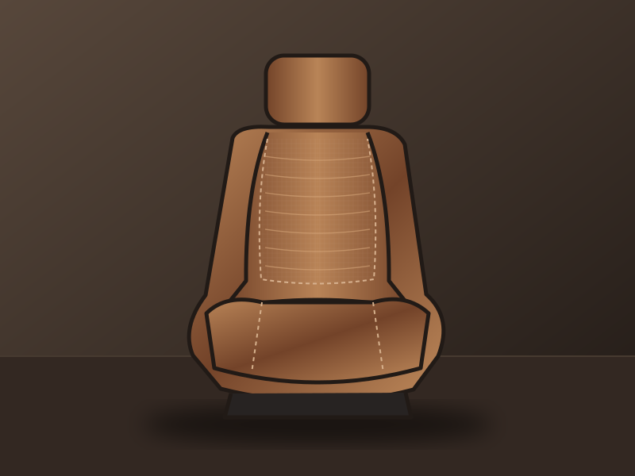
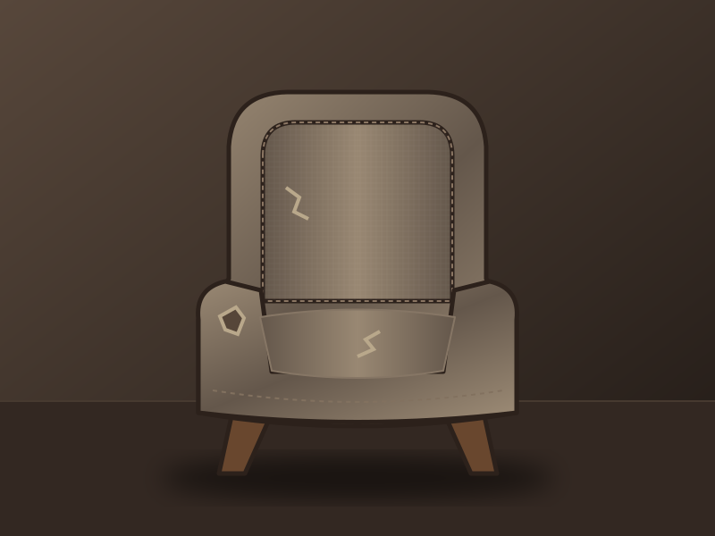
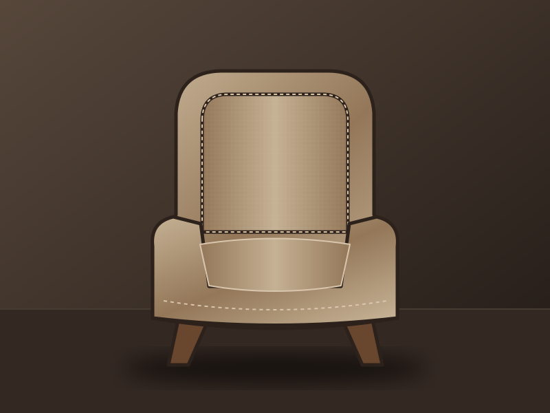

ANTESDESPUÉS‹ ›Asiento de automóvil
Cuero deteriorado → acabado renovado
TAPICERÍA ARTESANAL · FUENLABRADA
Del asiento que te acompaña cada día al sillón de toda la vida. Recupera su carácter con una tapicería cuidada, pensada para ti.

01 / NUESTRA MANERA DE VER EL OFICIO
Hay objetos que no son solo objetos. Un coche que guarda recuerdos, un sofá en el que has pasado años o una butaca heredada que tiene su sitio en casa. La tapicería permite conservar lo que importa y renovar lo que el tiempo ha desgastado.
En R&M el hogar y la automoción se encuentran en un mismo oficio: trabajar los materiales, cuidar las formas y buscar un resultado que tenga sentido para cada pieza.
El valor de las cosas bien hechas ↗02 / ESPECIALIDADES
Desde un pequeño desperfecto hasta una renovación integral, encuentra la línea de trabajo que necesitas y consulta las opciones disponibles.
 01 / MOTOR ↗INTERIORES CON PERSONALIDADAutomociónVuelve a disfrutar del interior de tu vehículo.
01 / MOTOR ↗INTERIORES CON PERSONALIDADAutomociónVuelve a disfrutar del interior de tu vehículo.
 02 / HOGAR ↗PIEZAS QUE FORMAN PARTE DE TU VIDAHogarConserva tus muebles y renueva su aspecto.
02 / HOGAR ↗PIEZAS QUE FORMAN PARTE DE TU VIDAHogarConserva tus muebles y renueva su aspecto.
Recupera el confort y la apariencia de las zonas desgastadas, roturas y costuras deterioradas.
Una solución para revestimientos descolgados o deteriorados que restan presencia al interior.
Consulta las posibilidades de renovación de las piezas que más utilizas al conducir.
Catálogo orientativo: disponibilidad y alcance de cada trabajo sujetos a confirmación con el taller.
03 / EL CAMBIO EN PRIMER PLANO
Desliza el control y descubre cómo una renovación de color, tejido y acabado puede transformar una pieza sin perder su forma.


ANTESDESPUÉS‹ ›Cuero deteriorado → acabado renovado


ANTESDESPUÉS‹ ›Tejido gastado → tapizado actualizado
Comparadores ilustrativos creados para mostrar la funcionalidad. No son fotografías de trabajos realizados por R&M.

04 / LA ESENCIA DEL OFICIO
La tapicería es un oficio que exige paciencia, precisión y conocimiento de los materiales. No todo se resuelve sustituyendo una pieza: a veces, lo que hace falta es recuperar aquello que ya está bien hecho.
Desde Fuenlabrada, R&M reúne el trabajo sobre mobiliario y vehículos. Son superficies distintas, pero comparten la importancia del confort, la resistencia y los pequeños detalles.
El tiempo deja huella.
El oficio sabe cómo renovarla.
Concepto narrativo propuesto para la demo; historia y antigüedad del negocio pendientes de documentar.
05 / INSPIRACIÓN
Explora posibilidades de tapizado para imaginar el resultado de tu propio proyecto. Pulsa cualquier imagen para ampliarla.
Fotografías de referencia de Unsplash. No constituyen un portfolio acreditado del taller.
06 / MATERIALES Y ACABADOS
El uso, el estilo y el mantenimiento de cada pieza ayudan a elegir el acabado adecuado. Estas muestras representan posibles direcciones de diseño.
Cálido, clásico y con personalidad.
Paleta digital ilustrativa. Los materiales reales, colores y disponibilidad deben comprobarse físicamente.
07 / DE LA IDEA AL RESULTADO
Un proceso sencillo para entender qué necesitas y valorar la mejor manera de recuperar tu pieza.
Describe el estado de la pieza y comparte fotografías para que podamos entender el trabajo.
Se estudia el tipo de reparación, los materiales y los acabados que pueden encajar.
Se acuerdan el alcance, el presupuesto y los plazos antes de comenzar.
El trabajo se lleva a cabo prestando atención a las formas, las costuras y los detalles.
Proceso orientativo de atención, pendiente de validar con R&M.
08 / LA CONFIANZA SE TRABAJA
La calidad de una tapicería se aprecia al volver a sentarse, al mirar una costura o al recuperar la comodidad de una pieza querida.
Consultar reseñas en Google ↗Las opiniones públicas mencionan reparaciones de asientos y renovaciones de techos de vehículos.
También se describen trabajos sobre sofás y butacas, con atención al resultado final.
Entre los aspectos destacados figuran los acabados, la atención y el cumplimiento de plazos.
09 / PREGUNTAS FRECUENTES
Algunas cuestiones habituales cuando te planteas renovar una pieza tapizada.
¿Tienes otra pregunta? ↗Depende de las dimensiones, el deterioro, el material y el alcance de la intervención. Conviene enviar fotografías y solicitar una valoración personalizada.
En muchos casos puede estudiarse una reparación localizada. La viabilidad depende del estado del material y de si se puede encontrar un acabado compatible.
La elección debe adaptarse al uso de la pieza y al acabado deseado. Consulta las opciones reales disponibles en el taller.
No hay un plazo único. Se debe confirmar la duración y la disponibilidad antes de encargar el trabajo.
Las fotografías ayudan a explicar el estado de la pieza, aunque puede ser necesario revisarla presencialmente para cerrar el presupuesto.
R&M se presenta como tapicería para hogar y automoción. Consulta con el establecimiento los trabajos concretos que puede asumir.
10 / HABLEMOS
Una fotografía, una idea o una pieza que necesita atención. Cuéntanos tu proyecto y consulta sus posibilidades.
28943 Fuenlabrada, Madrid
Cómo llegar ↗Confirma el horario antes de desplazarte.
Canal propuesto, disponibilidad de WhatsApp por confirmar.
FUENLABRADA · MADRID SUR
Encuentra el establecimiento en la calle Suiza y consulta cómo llegar desde tu ubicación.
Ver ubicación en Google Maps ↗